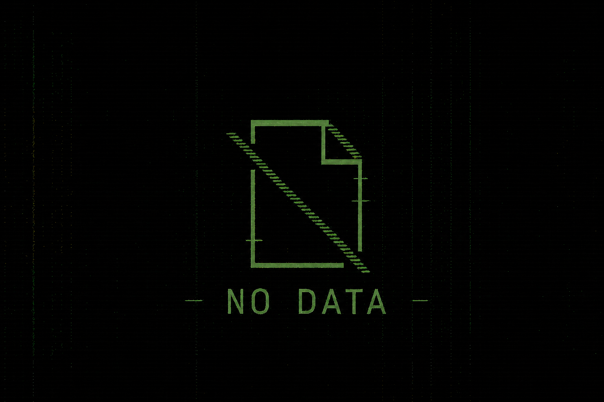

record damaged
Испытание турбогенератора
Ночная проверка режима выбега турбины привела к неустойчивому состоянию реактора РБМК-1000. После теплового разгона активная зона была разрушена, начался выброс радиоактивных материалов.